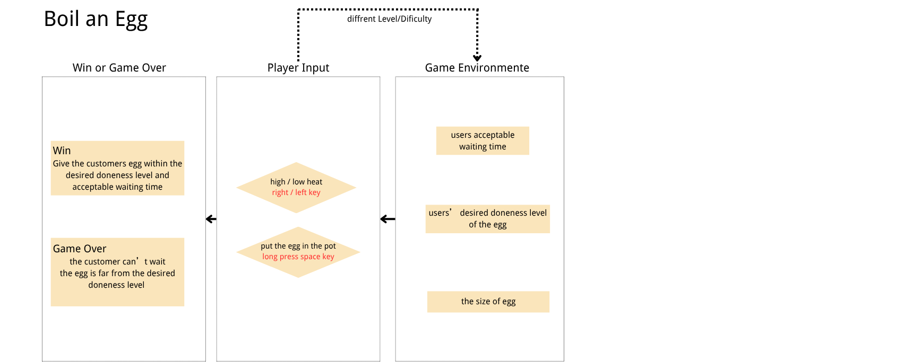

Boil an Egg
You cook eggs for a queue of customers. There is no clock and no doneness meter. You decide when the egg is ready by watching how hard the water boils, how the egg moves, and how loud the pot has become.
Designer statement
Boiling an egg is one of the most ordinary things I know how to do. Most people in China have had a morning where an egg is breakfast. And almost everybody does it the same wrong way: you drop the egg in, you try to count the minutes in your head, you get distracted, and then you are guessing.
What I actually learned over time is that you do not need the clock. The pot is already telling you. Water that is only just trembling is not the same as water rolling hard. An egg that has started to turn over in the water is not the same as an egg that is still sitting still. The sound climbs the longer it goes. I wanted to make a game where you are forced to use those signals, because I took the clock away.
The core emotion I want is light and warm — a small, relaxing thing, not a stressful one. The pressure comes from a customer who is waiting, not from a scoreboard shouting at you.
Domain knowledge
The real experience
Boiling an egg for breakfast. Everyone has done it. Almost nobody has been taught to do it by observation.
The novice misconception
A beginner believes that boiling an egg is a timing problem: set a number of minutes and wait. So when they forget to start the timer, they have nothing left to fall back on — they cannot tell doneness by looking. They also assume every egg cooks at the same rate, and do not adjust for a bigger or smaller egg.
What the expert actually does
An experienced cook reads the pot instead of the clock:
- How the water boils. Barely trembling means the egg is still near raw. A strong rolling boil means it is moving through soft-boiled toward half-set. Water that has been evaporating for a long time means you are heading into overcooked.
- How the egg moves. When it first starts to turn over in the water, it is around soft-boiled. When it turns quickly and violently, it is well done. If that goes on a long time, it is past done.
- The sound. The boil climbs from low to loud the longer it runs.
- The size of the egg. A large egg is still behind a small one even in the same water.
The core learning shift
Why this becomes playable
Because doneness is invisible and time is invisible, but the cues are not. The game hides the number and shows only the signals, so the only way to get better is to actually learn to read them. Failing teaches you directly: you see the level you served next to the level they asked for, so you know whether to hold longer or lift sooner.
The hard part, and why it is not a lookup table
The water tells you about the pot. The egg's movement tells you about the egg. These are not the same thing. A hard boil rattles a raw egg too — so a violently boiling pot makes it harder, not easier, to see whether the egg itself is ready. And because a large egg cooks slower than a small one, the same rolling boil does not mean the same doneness. Separating the signal from the noise is the skill.
System design

The doneness ladder
Six levels. Serving within one level of the order still counts.
- 1 Raw
- 2 Soft-Boiled
- 3 Jammy
- 4 Medium
- 5 Hard-Boiled
- 6 Overcooked
The data
| Group | Variable | What it does | Can the player see it? |
|---|---|---|---|
| Environment | eggSize |
Small, medium, or large. Changes how fast the egg cooks. | Yes — on the order ticket |
| Environment | desired |
The doneness the customer asked for. | Yes — on the order ticket |
| Environment | patienceLeft |
How long this customer will wait. Starts draining the moment they order. | Only as a draining bar — never as a number |
| Player | heatIndex |
Low / Medium / High. Set with ← and →. Carries over between customers. | Yes — the heat dial |
| Player | eggInPot |
True while Space is held. Releasing hands the egg straight to the customer. | Yes |
| Calculated | doneness |
Climbs from 1 to 6 at heat rate × size multiplier. |
No. This is the hidden number the whole game is about. |
| Calculated | agitation |
How hard the water boils right now. The heat dial sets the ceiling; the boil has to climb to it. | Yes — ripples, bubbles, steam, volume |
| Calculated | potBuild |
How far the pot has worked up to a full rolling boil. Climbs faster on high heat, and drops when a cold egg goes in. | Only through the water and the sound |
| Calculated | waterLevel |
Boils away over time. Shows how long the pot has been running. | Yes — the water line drops |
| Calculated | coins |
Your score for the run. | Yes |
How the hidden number becomes readable
The water
A pot does not reach a rolling boil the moment you turn the dial up. The bubbles start small and few and build, and dropping a cold egg in knocks the boil back down again — a bigger egg knocks it back further. So the water tells you how long this pot has been going, not how cooked the egg already is.
The egg
It sits still while it is raw, starts to turn around the pot near soft-boiled, and circles fast and lolls onto its side by hard-boiled. But a violent boil rattles a raw egg too, so you have to see past the water.
The sound
Generated live in the browser, never loaded as a file. It climbs from low to loud as the boil builds, and keeps opening up the longer the egg is in.
Success, failure, and coins
- Exactly the level they asked for → 5 coins.
- One level off → 3 coins.
- Two or more levels off → the customer leaves without paying. Run over.
- The patience bar empties → the customer stops waiting. Run over.
Coins are never taken away. A run lasts until you fail, and your score is the coins you collected. Your best run per difficulty is stored in your own browser.
The two challenge presets
| Easy | Hard | |
|---|---|---|
| Customer patience | 8–12 seconds | 4–8 seconds |
| Egg sizes | Medium only | Small, medium and large |
| Orders | Soft-Boiled, Jammy, Medium | Soft-Boiled to Hard-Boiled |
| What actually gets harder | You have room to run a lower heat and watch the egg properly. | Short patience pushes you onto high heat, and high heat is exactly the condition where the shaking water hides what the egg is doing. Varying size means the same cue no longer means the same doneness. |
Where the project actually is
This is the first playable milestone, finished 6 September 2026. One complete observe → judge → act → feedback → adjust loop, with both challenge presets.
Built and working: the full loop, six-level doneness, hold-to-cook and release-to-serve, three heat levels, water and egg and sound feedback, both presets, coins, game over, best score, and this site.
Not built yet: background music (only the boiling sound is generated so far), hand-drawn character art beyond the simple shapes currently on screen, and any playtesting with other people. Nothing on this page describes a feature that does not exist.
Read the honest version, including what went wrong, on the development process page.